무선설비기사 (2012-10-06 기출문제)
1과목: 디지털 전자회로
1. 다음 회로에서 맥동률을 개선하고자 한다. 가장 관련 있는 것은?
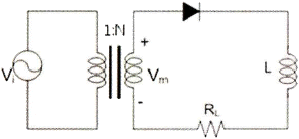
- RL
- N
- Vi
- Vm
(정답률: 74%)

2. 다음 그림의 회로에서 근사적으로 베이스전압 VB를 구하기 위한 부분적인 바이어스 회로이다. VB의 값을 구하면?
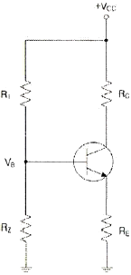
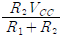
- R2VCC
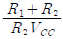
- R1VCC
(정답률: 74%)
3. 부궤환 증폭기의 특징에 대한 설명으로 틀린 것은?
- 주파수 대역폭이 증대 된다.
- 이득이 증가한다.
- 주파수 일그러짐이 감소된다.
- 안정도가 향상된다.
(정답률: 56%)
4. 다음 하틀리 발진회로에서 캐패시턴스 C=200[pF], 인덕턴스 L1=180[μH], L2=20[μH]이며, 상호인덕턴스 M=90[μH]의 값을 가질 때 발진주파수는 약 얼마인가?
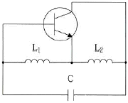
- 517[kHz]
- 537[kHz]
- 557[kHz]
- 577[kHz]
(정답률: 74%)
5. 인가되는 역전압의 직류전압에 의해 캐피시턴스가 가변되는 소자를 이용하여 발진주파수를 가변하는 발진회로는?
- 윈-브리지 발진회로
- 위상천이 발진회로
- 전압제어 발진회로
- 비안정멀티바이브레이터
(정답률: 48%)
6. 다음 중 증폭기의 종류에 해당하지 않는 것은?
- A급 증폭기
- AB급 증폭기
- C급 증폭기
- AC급 증폭기
(정답률: 85%)
7. 진폭변조에서 80[%] 변조하였을 때 상측파대의 전력은 반송파 전력의 몇 [%]인가?
- 16[%]
- 32[%]
- 40[%]
- 48[%]
(정답률: 51%)
8. 슈미트 트리거 회로의 출력 파형은?
- 방형파
- 정현파
- 삼각파
- 램프파
(정답률: 70%)
9. 다음 중 드모르간 법칙에 해당하는 것은?
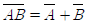
- AB=BA
- A(B+C)=AB+AC
- A(A+B)=A
(정답률: 83%)
10. 34710을 BCD(Binary Coded Decimal) 코드로 표시하면?
- 0011 0100 0111
- 0001 0101 0010
- 1010 1010 0110
- 0110 1101 1000
(정답률: 76%)
11. 다음 회로가 수행할 수 있는 논리 기능은?
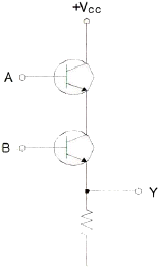
- NOT
- OR
- AND
- XOR
(정답률: 76%)
12. 다음 중 멀티플렉서(multiplexer)의 설명으로 잘못된 것은?
- 멀티플렉서는 전환스위치(selector SW)의 기능을 갖는다.
- N개의 입력 데이터에서 1개 입력씩만 선택하여 단일 통로로 송신하는 것이다.
- 특정한 입력을 몇 개의 코드화된 신호의 조합으로 바꾼다.
- 4×1 멀티플렉서의 경우에는 2개의 선택신호가 필요하다.
(정답률: 56%)
13. n개의 입력으로부터 2진 정보를 2n개의 독자적인 출력으로 변환이 가능한 것은?
- 멀티플렉서
- 디코더
- 계수기
- 비교기
(정답률: 76%)
14. 어떤 정류회로의 맥동률이 1[%]인 정류회로의 출력 직류전압이 400[V]일 때, 이 회로의 리플 전압은 얼마인가?
- 4[V]
- 40[V]
- 20[V]
- 2[V]
(정답률: 71%)
15. 다음 회로에서 R의 용도로 가장 적합한 것은?
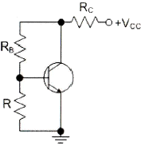
- 전류 부궤환 된다.
- 교류 이득이 증가한다.
- 동작점이 안정화 된다.
- 신호 이득을 방지한다.
(정답률: 69%)
16. 구형파를 발생시키는 발진기는 무엇인가?
- 수정발진기
- 멀티바이브레이터
- 플레이트동조발진기
- 다이네트론발진기
(정답률: 72%)
17. 다음은 디멀티플렉서 회로의 일부분이다. 점선 안에 공통으로 들어갈 게이트는? (단, S0, S1은 선택신호이고 I는 데이터 입력이다.)
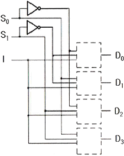
- OR 게이트
- AND 게이트
- XOR 게이트
- NOT 게이트
(정답률: 68%)
18. 다음 중 반가산기의 구성요소로 알맞은 것은?
- 배타적 OR(XOR) 게이트와 AND 게이트
- JK 플립플롭
- 2개의 OR 게이트
- RS 플립플롭과 D 플립플롭
(정답률: 79%)
19. 평활회로의 기능에 대해 바르게 설명한 것은?
- 콘덴서나 인덕터를 통해 파형을 평탄하게 하여 일정한 크기의 전압을 만든다.
- 트랜지스터를 통해 (-)성분을 제거시켜서 평균값을 발생시킨다.
- 제너다이오드를 통해 출력전압을 안정화시켜준다.
- 트랜지스터를 통해 출력전압을 안정화시켜준다.
(정답률: 72%)
20. 다음은 달링턴 회로에서 직류 바이어스 전류 IE를 계산하면 약 얼마인가? (단, IB=2.56[μA], β1=100, β2=100이다.)
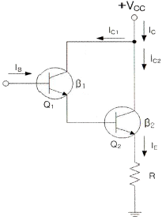
- 2.61[mA]
- 26.1[mA]
- 261[mA]
- 2.61[A]
(정답률: 65%)
2과목: 무선통신 기기
21. 진폭편이변조(ASK) 신호에 대한 설명으로 적합하지 않은 것은?
- 정보비트를 양극성 NRZ로 부호화한 기저대역 신호를 DSB변조하여 얻는다.
- 데이터가 1인 구간에서는 반송파가 있고, 0인 구간에서는 반송파를 보내지 않는다.
- ASK의 전력스펙트럼은 양측파대 특성을 갖는다.
- ASK 신호의 복조에는 아날로그 AM 통신에서의 복조방식을 사용할 수 있다.
(정답률: 79%)
22. 변조도 m=1(100[%])인 경우 SSB 송신출력과 DSB 송신출력과의 비는 어떻게 되는가?
- 3배(4.8dB)
- 6배(7.8dB)
- 9배(9.5dB)
- 12배(10.8dB)
(정답률: 85%)
23. 주파수가 50[kHz]인 정형파 신호를 100[MHz]의 반송파로 주파수 변조하여 최대 주파수 편이가 500[kHz]가 되었다고 하자. 발생된 FM 신호의 대역폭과 FM 변조지수는 각각 얼마인가?
- 1,100[kHz], 10
- 1,200[kHz], 15
- 1,500[kHz], 20
- 1,800[kHz], 20
(정답률: 86%)
24. 무선통신에서 변조를 하는 이유로 가장 적합하지 않는 것은?
- 장거리 통신을 수행하기 위해 실시한다.
- 안테나 제작문제를 해결하기 위해 실시한다.
- S/N비를 개선시키기 위해 실시한다.
- 시분할 다중통신을 수행하기 위해 실시한다.
(정답률: 62%)
25. 64[kbps] 이진 PCM 신호를 ISI(심볼간 간섭) 없이 수신할 수 있도록 하는 시스템의 최소대역폭은 얼마인가?
- 8[kHz]
- 16[kHz]
- 32[kHz]
- 64[kHz]
(정답률: 73%)
26. 다음 중 레이더(Radar)를 설명한 것으로 가장 적합한 것은?
- 자이로를 이용하여 스스로 위치와 방향을 알 수 있다.
- 방향만 알 수 있고 거리는 파악이 어렵다.
- 펄스를 보내 물체로부터 반사된 펄스가 수신될 때까지의 시간을 측정한다.
- 상대방이 위치를 알려주는 시스템이다.
(정답률: 87%)
27. 웨버법에 의한 SSB파 발생 회로의 구성 요소가 아닌 것은?
- 평형 변조기
- 90°이상 회로
- 합성 회로
- 고역 필터
(정답률: 73%)
28. 다음 중 SSB 송신기에 해당하는 전파 형식으로 적합한 것은?
- J3E
- A3E
- A1A
- A2A
(정답률: 69%)
29. 상업용 FM 방송에서는 기저대역 신호의 대역을 15~30[kHz]로 하고, 최대 주파수 편이 △f=75[kHz]로 제한하고 있다. 전송대역폭을 각 채널당 200[kHz]로 할당하는 경우 FM 방송에서의 신호 대역폭은 얼마인가?
- 150[kHz]
- 160[kHz]
- 180[kHz]
- 200[kHz]
(정답률: 86%)
30. ASK, FSK, BPSK의 성능에 대한 비교 설명으로 적합하지 않은 것은?
- 비동기식 ASK와 비동기식 FSK는 동기식 복조에 비해 약 1[dB]의 성능 열화가 있다.
- 가장 성능이 우수한 것은 동기식 BPSK이다.
- 동기식 ASK와 동기식 FSK의 성능은 동일하다.
- 비동기식 BPSK와 동기식 FSK와 성능이 거의 동일하다.
(정답률: 64%)
31. 정류회로에서 초크 L 입력형과 콘덴서 C 입력형을 설명한 것으로 적합하지 않은 것은?
- 콘덴서 C 입력형은 부하 전류의 평균치와 최대치의 차가 크다.
- 콘덴서 C 입력형은 맥동률이 크다.
- 초크 L 입력형은 정류 소자 전류가 연속적이다.
- 초크 L 입력형은 전압 변동율이 작다.
(정답률: 83%)
32. 축전지에서 백색 황산납 발생의 직접적인 원인이 아닌 것은?
- 소전류로 장시간에 걸쳐서 방전할 때
- 방전 후 곧바로 충전하였을 때
- 불충분한 충전을 할 때
- 전해액의 온도의 상승과 하강이 빈번히 일어날 때
(정답률: 76%)
33. 무정전전원공급장치(UPS)의 On-Line 방식에 대한 설명으로 적합하지 않은 것은?
- 상용전원을 그대로 출력으로 내보내며 축전지는 충전회로를 통해 충전한다.
- 상시 인버터 방식이라고도 한다.
- 항상 인버터 회로를 경유하여 출력으로 내보낸다.
- 출력이 안정되며 높은 정밀도를 가진다.
(정답률: 76%)
34. 전원 회로에 사용되는 금속 정류기의 종류가 아닌 것은?
- 아산화동 정류기
- 셀렌 정류기
- 산화 정류기
- 반도체 정류기
(정답률: 62%)
35. 진폭변조(AM) 송신기의 전력 측정방법으로 적합하지 않은 것은?
- 실효 저항법
- 의사 공중선법
- 전구의 조도비교법
- 볼로미터 브리지법
(정답률: 82%)
36. 단상 반파 정류회로에서 직류 출력전류의 평균치를 측정하면 어떤 값이 얻어지는가? (단 Im은 입력 교류전류의 최대치이다.)
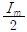
- Im
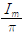
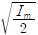
(정답률: 77%)
37. 오실로스코프의 수직축에는 피변조파, 수평축에는 이상기를 거친 변조신호를 인가하면 사다리꼴의 출력 파형이 나타난다. A가 B의 3배일 때 변조도는 몇 [%]인가?
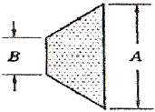
- 50[%]
- 60[%]
- 80[%]
- 100[%]
(정답률: 74%)
38. 오실로스코프의 용도로 적합하지 않는 것은?
- 스펙트럼 분석
- 주파수 및 주기 측정
- 파형관측 비교
- 위상차 측정
(정답률: 79%)
39. 다음 중 전지의 내부저항을 측정하기 위해 사용되는 브리지로 적합한 것은?
- 맥스웰(Maxell) 브리지
- 헤이(Hey) 브리지
- 헤비사이드(Heaviside) 브리지
- 코올라우시(Kohlrausch) 브리지
(정답률: 81%)
40. 축전지의 초충전을 설명한 것으로 가장 적합한 것은?
- 축전지를 제조한 후 마지막으로 걸어주는 충전이다.
- 충전 시작하자마자 가스가 발생한다.
- 충전 전류는 10% 내외로 한다.
- 온도 상승을 피하기 위해 충전시간은 70~80시간 정도로 한다.
(정답률: 90%)
3과목: 안테나 공학
41. 두 개의 금속판을 마주보게 놓고 전압을 인가했을 때 극판 사이의 전속밀도(D)는 얼마인가? (단, 극판에 축적된 전하를 Q[C], 극판 면적을 S[m2 ], 극판 사이의 유전율을 ε이라 한다.)
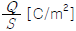
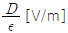
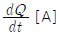
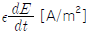
(정답률: 83%)
42. 어떤 전자파의 전계의 세기는 E=10cos(109t + 30z)와 같다. 이 전자파의 위상속도는 얼마인가?
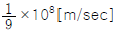
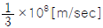
- 3×108[m/sec]
- 9×108[m/sec]
(정답률: 82%)
43. 다음 중 파장이 가장 짧은 주파수대는 어느 것인가?
- UHF
- VHF
- SHF
- EHF
(정답률: 90%)
44. 부하의 정규화 임피던스가 Zn=1.5+j0인 무손실 급전선의 전압 정재파비를 구하면 얼마인가?
- 1.0
- 1.5
- 2.0
- 3.0
(정답률: 84%)
45. 다음 평행 2선식 급전선 중 특성 임피던스가 가장 높은 것은 어느 것인가?
- 선직경 1.2[mm], 선간격 20[cm]
- 선직경 1.2[mm], 선간격 30[cm]
- 선직경 2.4[mm], 선간격 30[cm]
- 선직경 2.4[mm], 선간격 20[cm]
(정답률: 82%)
46. 공중선계에 대한 설명으로 적합하지 않은 것은?
- 공중선 전류의 파복에서 급전하는 것을 전류급전이라 한다.
- 같은 길이의 안테나에서도 전압급전인가, 전류급전인가에 따라 특성 임피던스가 달라진다.
- 동조 급전선인 때에만 전압급전과 전류급전의 구별이 있다.
- 안테나의 길이가 λ/2이더라도 중앙에서 급전하면 전류급전이고, 끝단에서 급전하면 전압급전이다.
(정답률: 65%)
47. 가장 이상적인 VSWR(정재파비)의 값은 얼마인가?
- 0
- ∞
- 1
- 10
(정답률: 81%)
48. 마이크로파의 전송선로로서 도파관을 사용하는 이유로 가장 적절한 것은?
- 취급전력이 작고 방사손실이 없다.
- 유전체 손실이 적다.
- 부하와의 정합상태가 불량하여도 정재파가 발생하지 않는다.
- 외부 전자계와 완전하게 격리가 불가능하다.
(정답률: 91%)
49. Top Loading의 효과로 적절한 것은?
- 실효길이의 증가
- 고유주파수의 증가
- 방사저항의 감소
- 방사효율의 감소
(정답률: 83%)
50. 접지저항이 큰 순서로 올바르게 나열한 것은?
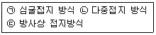
- ㉠ ＞㉡ ＞㉢
- ㉢ ＞㉠ ＞㉡
- ㉡ ＞㉠ ＞㉢
- ㉠ ＞㉢ ＞㉡
(정답률: 92%)
51. 진행파형 안테나에 속하지 않는 것은 어느 것인가?
- Fish bone 안테나
- Rhombic 안테나
- Beverage 안테나
- Beam 안테나
(정답률: 67%)
52. 등방성안테나를 기준 안테나로 하는 이득은?
- 절대이득
- 상대이득
- 지상이득
- 최대이득
(정답률: 93%)
53. λ/4 수직접지안테나의 복사전계강도를 나타내는 식으로 올바른 것은?
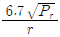
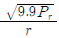
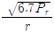
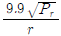
(정답률: 68%)
54. 안테나의 구조에 의한 분류 중 극초단파(UHF)용 판상안테나에 속하지 않는 것은?
- 슈퍼 턴 스타일(super turn style) 안테나
- 슬롯(slot) 안테나
- 빔(Beam) 안테나
- 코너 리플렉터(corner reflector) 안테나
(정답률: 64%)
55. 전리층의 불균일성 및 시간적인 변동 등으로 전리층 반사파의 위상이 변하게 되어 전리층 반사파 상호간에 간섭을 일으켜서 페이딩이 일어나는 경우가 있다. 이것에 대한 설명으로 틀린 것은?
- 간섭성 페이딩의 일종이다.
- 공간 다이버시티를 사용하여 줄일 수 있다.
- 원거리 페이딩이라고도 한다.
- AGC를 사용하여 줄일 수 있다.
(정답률: 82%)
56. 다음 중 지표파에 대한 설명으로 적합하지 않은 것은?
- 대지의 도전율과 유전율이 작을수록 감쇠가 적다.
- 주파수가 낮을수록 멀리 전파한다.
- 사막지대보다 해안지역에서 멀리 전파한다.
- 수평편파보다 수직편파에서 감쇠가 적다.
(정답률: 66%)
57. 다음 중 산악회절파의 특성으로 적합하지 않은 것은?
- 조건에 맞도록 설계하면 전파손실이 적은 강한 수신전계를 얻을 수 있다.
- 페이딩의 영향을 많이 받는다.
- 초단파대 초가시거리 통신을 수행할 수 있다.
- 지리적 제한을 받는다.
(정답률: 60%)
58. 송수신 안테나 높이가 9[m]로 동일하게 놓여 있는 경우 직접파 통신이 가능한 전파 가시거리는 약 얼마인가?
- 8.22[km]
- 12.44[km]
- 24.66[km]
- 32.88[km]
(정답률: 83%)
59. 중파 방송국의 안테나 전력을 10[kW]에서 40[kW]로 증가하면 동일지점의 전계강도는 몇 배로 되는가?
- 변화가 없다.
- √2배 증가한다.
- 2배 증가한다.
- 4배 증가한다.
(정답률: 85%)
60. 대지면에 설치된 수직접지 안테나로부터 지표면을 따라 전파가 진행할 때 감쇠가 적은 순서대로 바르게 배열한 것은?
- 해면, 평지, 산악, 사막
- 사막, 산악, 평지, 해면
- 해면, 산악, 평지, 사막
- 사막, 평지, 산악, 해면
(정답률: 87%)
4과목: 무선통신 시스템
61. 정현파 신호를 반송파를 이용하여 60[%] 진폭변조(AM)한 경우 반송파 전력이 1,000[W] 라면, 이 때의 피변조파 전력은 얼마인가?
- 1,180[W]
- 1,036[W]
- 936[W]
- 890[W]
(정답률: 79%)
62. 어느 ADC(Analog-to Digital Converter)가 -5~+5[V]의 압력을 가지며 한 샘플은 4비트로 양자화 된다. 이 경우 발생한 양자화 잡음전력은 얼마인가?
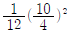
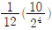
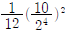
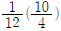
(정답률: 66%)
63. 다단 증폭시스템에서 종합 잡음지수를 가장 효과적으로 개선할 수 있는 시스템 구성요소로 적합한 것은?
- 전치 증폭기
- 자동 이득 조절기
- 대역 통과 필터
- 검파기
(정답률: 80%)
64. DS(Direct Sequence)는 코드분할다중접속 (CDMA)를 구현하기 위해 사용되는 대역확산 통신방식 중의 하나이다. 다음 중 DS방식을 수행하기 위해 필요한 구성요소가 아닌 것은?
- PSK변조기
- 동기검파기
- 주파수합성기
- PN부호 발생기
(정답률: 71%)
65. M/W 통신에서 송신출력이 1[W], 송수신 안테나 이득이 각각 30[dBi], 수신 입력 레벨이 -30[dBm] 일 때 자유공간 손실은 몇 [dB]인가? (단, 전송선로 손실 및 기타손실은 무시한다.)
- 112[dB]
- 117[dB]
- 120[dB]
- 123[dB]
(정답률: 86%)
66. 위성통신에서 정지 위성 궤도에 대한 설명으로 적합하지 않은 것은?
- 지구 적도 상공 약 35,786[km]에 존재하는 궤도이다.
- 하나의 위성은 궤도상에서 지구표면의 약 50[%] 시각성을 갖는다.
- 지구의 자전주기와 위성의 회전주기가 같은 궤도이다.
- 궤도 1주기는 약 24시간이다.
(정답률: 77%)
67. 검파중계방식에 대한 설명으로 적합하지 않은 것은?
- 다른 중계방식에 비해 통화로의 삽입 및 분기가 간단하다.
- 장거리 중계방식으로 널리 사용된다.
- 변복조장치가 부가되어 있어 장치가 복잡하다.
- 변복조장치의 비직선성으로 인한 특성 열화가 발생한다.
(정답률: 47%)
68. 이동통신에서 사용되는 대역확산 변조 방식인 DS-CDMA에서는 확산코드로 정보 비트를 확산한다. 전송 정보 비트와 확산코드가 아래 그림과 같다면 확산이득은 얼마인가?
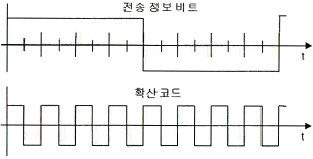
- 1
- 2
- 4
- 8
(정답률: 82%)
69. 이동통신에서 원래 등록한 서비스 관리지역을 벗어나 다른 서비스 지역에 들어가서도 통화할 수 있도록 해주는 서비스를 무엇이라 하는가?
- 주파수 재사용
- 로밍(Roaming)
- 핸드오프(Hand-off)
- 번호이동
(정답률: 70%)
70. 통신 프로토콜의 계층화 개념에서 데이터가 상위계층에서 하위계층으로 내려가면서 데이터에 제어정보를 덧붙이게 되는데 이를 무엇이라 하는가?
- framing
- flow control
- encapsulation
- transmission control
(정답률: 86%)
71. OSI 참조 모델의 계층과 이에 관련된 프로토콜이나 기술을 잘못 짝지은 것은?
- 데이터링크 계층 - LLC
- 전달 계층 - FTP
- 물리 계층 - IrDA
- 네트워크 계층 - OSPF
(정답률: 82%)
72. OSI 7계층 중 응용 프로세스 간 통신을 관장하는 역할을 하는 계층은?
- 응용계층
- 표현계층
- 세션계층
- 전달계층
(정답률: 64%)
73. 프로토콜에 대한 다음 설명 중 빈칸( )에 적합한 것은?
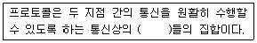
- 규약
- 링크
- 요소
- 기능
(정답률: 92%)
74. 데이터통신에서 바이트 방식 프로토콜로 적합한 것은?
- ADCCP
- HDLC
- DDCMP
- SDLC
(정답률: 65%)
75. OSI 참조모델의 계층과 프로토콜에 대한 설명으로 적합하지 않은 것은?
- 임의의 계층은 바로 아래 계층의 사용자이다.
- 임의의 계층은 바로 위 계층에서 서비스를 제공한다.
- 프로토콜은 상대 시스템의 피어 계층과의 통신에 대한 규약이다.
- 상대 시스템의 피어 계층으로 프로토콜 정보를 직접 전달한다.
(정답률: 72%)
76. 통신망관리 기본 기능으로 가장 적합하지 않는 것은?
- 장애관리기능
- 성능관리기능
- 구성관리기능
- 연구관리기능
(정답률: 78%)
77. 무선설비의 기본 설계에 포함되어야 할 사항이 아닌 것은?
- 자재 명세서
- 공사의 목적
- 주요 공정
- 설계 기준
(정답률: 73%)
78. 마이크로파 시설 설계시 작성해야 할 도면으로 적합하지 않은 것은?
- 철탑시설 단면도
- 공조시설 배치도
- 접지선 포설도
- 케이블 포설도
(정답률: 66%)
79. 위성통신회선의 다원 접속방식이 아닌 것은?
- WDMA
- FDMA
- TDMA
- CDMA
(정답률: 86%)
80. 위성통신시스템에서 지구국 장비의 구성 요소가 아닌 것은?
- 변복조기
- 저압음 증폭기
- 주파수 변환기
- 페이로드 시스템
(정답률: 80%)
5과목: 전자계산기 일반 및 무선설비기준
81. 방송통신기자재 등의 적합성 평가 중에서 적합인증을 받아야 하는 대상 기자재가 아닌 것은?
- 라디오브이의 기기
- 무선 CATV용 무선설비의 기기
- 간이무선국용 무선설비의 기기
- 방송수신기기
(정답률: 52%)
82. 한국방송통신전파진흥원이 수행하는 사업과 거리가 먼 것은?
- 전파이용 촉진에 관한 연구
- 전파관련 산업의 실태조사
- 방송ㆍ통신ㆍ전파 관련 국내외 기술에 관한 정보의 수집ㆍ조사 및 분석
- 방송ㆍ통신ㆍ전파에 관한 연구지원
(정답률: 60%)
83. 전파형식이 F3E인 초단파 방송국의 무선설비의 점유주파수대폭의 허용치는?
- 16[kHz]
- 180[kHz]
- 200[kHz]
- 400[kHz]
(정답률: 84%)
84. 전파응용설비의 고주파출력측정 및 산출방법은 누가 정하여 고시하는 바에 의하는가?
- 방송통신위원장
- 한국전자통신연구원장
- 중앙전파관리소장
- 한국방송통신전파진흥원장
(정답률: 27%)
85. 다음 중 무선국 시설자 등이 준수하여야 할 통신보안에 관한 사항에 해당하지 않는 것은?
- 통신보안교육 등에 관한 사항
- 통신보안책임자의 지정에 관한 사항
- 통신시 기록할 통신내용에 관한 사항
- 무선국 허가시 통신보안 조치에 관한 사항
(정답률: 74%)
86. 적합성평가 대상기자재에 대하여 적합인증을 신청시 제출할 서류가 아닌 것은?
- 기본모델의 개요, 사양, 구성, 조작방법 등이 포함된 설명서
- 외관도 및 부품의 배치도
- 기본모델의 기기의 제작공정
- 회로도
(정답률: 82%)
87. 무선설비규칙에서 정의한 “불요발사”로서 적합한 것은?
- 대역외발사 및 스퓨리어스 발사
- 대역내발사를 말한다.
- 필요주파수대폭의 바로 안쪽 발사 에너지
- 스퓨리어스발사 및 저감반송파
(정답률: 90%)
88. 무선국에서 사용하는 주파수마다의 중심 주파수를 무엇이라 하는가?
- 기준주파수
- 지정주파수
- 특성주파수
- 필요주파수
(정답률: 61%)
89. 무선설비는 전원이 정격전압의 얼마 이내의 범위에서 안정적으로 동작 할 수 있어야 하는가?
- ±5[%]
- ±10[%]
- ±15[%]
- ±20[%]
(정답률: 91%)
90. 무선설비의 안전시설기준에서 정하는 발전기, 정류기 등에 인입되는 고압전기는 절연차폐체 내에 수용하여야 한다. 다음 중 고압전기에 포함되는 것은?
- 220볼트를 초과하는 교류전압
- 220볼트를 초과하는 직류전압
- 500볼트를 초과하는 교류전압
- 750볼트를 초과하는 직류전압
(정답률: 87%)
91. 다음 중 RISC의 특징이 아닌 것은?
- 고정된 길이의 명령어 형식으로 디코딩이 간단하다.
- 단일 사이클의 명령어 실행
- 마이크로 프로그램된 제어보다는 하드와이어된 제어를 채택한다.
- CISC보다 다양한 어드레싱 모드
(정답률: 77%)
92. 부동 소수점 표현의 수들 사이에서 곱셈 알고리즘 과정에 해당하지 않는 것은?
- 0(zero)인지의 여부를 조사한다.
- 가수의 위치를 조정한다.
- 가수를 곱한다.
- 결과를 정규화한다.
(정답률: 77%)
93. 다음 문장의 결과 값은?
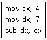
- 3
- 4
- 5
- 2
(정답률: 88%)
94. 16비트 명령어 형식에서 연산코드 5비트, 오퍼랜드1은 3비트, 오퍼랜드2는 8비트일 경우, ⓐ 연산종류와 사용할 수 있는 ⓑ 레지스터의 수를 바르게 나열한 것은?
- ⓐ 32가지 ⓑ 512
- ⓐ 31가지 ⓑ 8
- ⓐ 32가지 ⓑ 8
- ⓐ 8가지 ⓑ 511
(정답률: 87%)
95. 다음 중앙처리장치의 명령어 싸이클 중 (가)에 알맞은 것은?
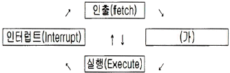
- Instruction
- Indirect
- Counter
- Control
(정답률: 66%)
96. 상대 주소지정(relative addressing)에서 사용하는 레지스터는 무엇인가?
- 일반 레지스터(general register)
- 색인 레지스터(index register)
- 프로그램 계수기(program counter)
- 메모리 주소 레지스터(memory address register)
(정답률: 70%)
97. 다음 중 10진수 56789에 대한 BCD(Binary Coded Decimal)는 어느 것인가?
- 0101 0110 0111 1000 1001
- 0011 0110 0111 1000 1001
- 0111 0110 0111 1000 1001
- 1001 0110 0111 1000 1001
(정답률: 86%)
98. 다음 지문이 의미하는 소프트웨어는 무엇인가?
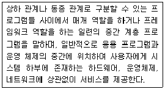
- 유틸리티
- 디바이스 드라이버
- 응용소프트웨어
- 미들웨어
(정답률: 92%)
99. 다음 중 16비트 마이크로프로세서에 속하지 않은 것은?
- 인텔(Intel) 8088
- Zilog Z-8000
- Motorola 68020
- 인텔(Intel) 80286
(정답률: 73%)
100. 다음 중 마이크로 명령어에 대한 설명으로 틀린 것은?
- OP코드와 오퍼랜드로 구분한다.
- 오퍼랜드에는 주소, 데이터 등이 저장된다.
- 오퍼랜드는 오직 한 개의 주소만 존재한다.
- 컴퓨터 기계어 명령을 실행하기 위해 수행되는 낮은 수준의 명령어이다.
(정답률: 77%)
이유는 회로에서 맥동률을 개선하고자 한다는 것은 출력 전압인 Vm을 증가시키고 싶다는 것을 의미한다. 따라서 Vm을 증가시키기 위해서는 출력 저항 RL을 감소시켜야 한다. 이는 오므로스 법칙에 따라 Vm이 일정하다면 RL이 작아질수록 출력 전류 IL이 증가하게 되어 맥동률이 개선된다.
따라서 RL이 맥동률 개선에 가장 관련이 있는 요소이다.